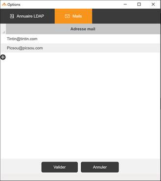
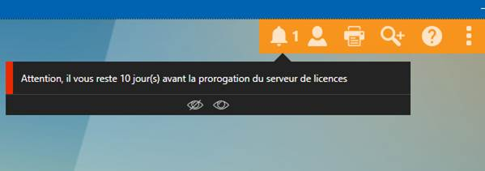

Accueil | DLMT - Gestion des licences nommées | Divalto Licences Management Tool (DLMT) | Proroger un serveur de licences
Un serveur de licences reste actif jusqu’à la date limite de prorogation. Au-delà de cette date, il ne délivrera plus de licences. À tout moment avant cette date, il est possible de proroger manuellement le serveur de licences par le choix « Proroger le serveur de licences » du menu général.
Lors de l’activation d’un serveur, il est possible d’indiquer les adresses Email des personnes à informer dix jours avant la date limite de prorogation.

Les profils administrateurs recevront également une notification à partir de l’Interface d’accueil de l’ERP.
